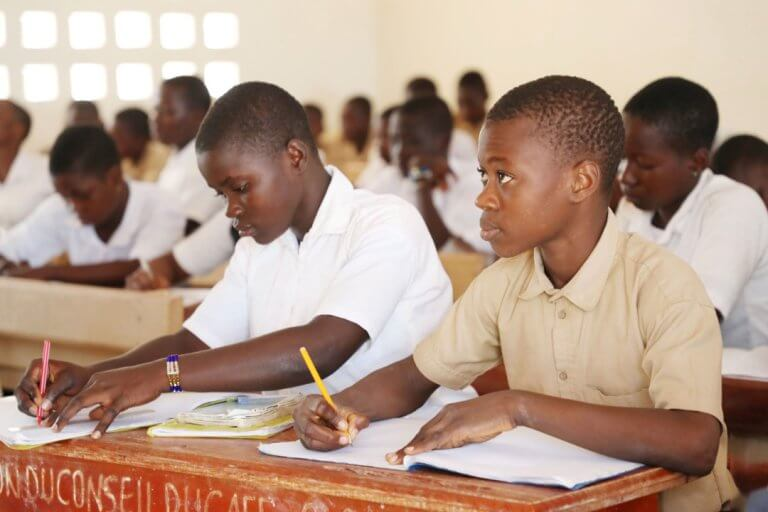
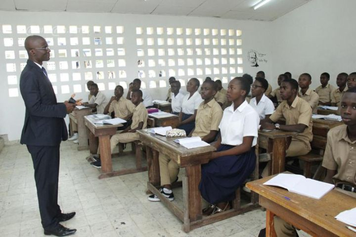

Notre Établissement

PRIMAIRE

SECONDAIRE: 1er Cycle

Le Collège Privé Le ERON propose l'une des premières formes d'études techniques,
essentielles pour établir le standard d'excellence.
Au Collège Privé Le ERON, nous proposons un programme éducatif rigoureux et complet, aligné sur le curriculum national ivoirien. Notre mission est de cultiver l'excellence académique, la pensée critique, et l'intégrité morale. De l'école primaire au secondaire, nos élèves sont encadrés par des éducateurs expérimentés, engagés à nourrir leur passion pour l'apprentissage. Nous offrons un large éventail de matières, incluant les sciences, les mathématiques, les langues et les sciences sociales, afin de préparer nos élèves aux examens nationaux et à leurs futures études. Au sein du Collège Le ERON, nous croyons en l'accompagnement de chaque élève pour qu'il atteigne son plein potentiel et devienne un citoyen responsable et épanoui.
Au Collège Privé Le ERON, le cycle primaire du CP1 au CM2 est conçu pour poser les bases solides d'une éducation de qualité. Nous nous engageons à offrir un environnement d'apprentissage stimulant où chaque enfant peut développer ses compétences fondamentales en lecture, écriture, calcul, histoire, géographie et sciences. Nos enseignants qualifiés et attentifs veillent à ce que chaque élève progresse à son rythme.
Au Collège Privé Le ERON, le premier cycle du secondaire, de la 6ème à la 3ème, est une étape cruciale dans la formation de nos élèves. Nous mettons l'accent sur le renforcement des acquis du primaire tout en introduisant des matières plus complexes et diversifiées telles que les sciences, les mathématiques, les langues, et l'histoire-géographie. Nos enseignants expérimentés accompagnent chaque élève dans l'approfondissement de ses connaissances, tout en développant son esprit critique et sa capacité d'analyse. Ce cycle est également marqué par une préparation rigoureuse aux examens du Brevet d'Études du Premier Cycle (BEPC). À travers une pédagogie active et un encadrement personnalisé, nous aidons nos élèves à développer des compétences solides qui les prépareront pour le second cycle et leur future réussite académique.
Au Collège Privé Le ERON, le second cycle du secondaire, de la 2nde à la Terminale, est un passage clé dans la préparation de nos élèves à l'examen du Baccalauréat et à leur future carrière universitaire ou professionnelle. Nous offrons un enseignement rigoureux dans les différentes filières, notamment littéraire, scientifique, et économique, permettant à chaque élève de s'épanouir dans la voie qui correspond à ses aspirations. Nos enseignants expérimentés sont dédiés à la réussite de chaque étudiant, en les accompagnant dans l'acquisition de compétences approfondies et en développant leur esprit critique. À travers des méthodes pédagogiques modernes et un suivi personnalisé, nous veillons à ce que nos élèves soient bien préparés pour affronter les défis académiques et réussir brillamment leur parcours scolaire.
Installations fournies pour les élèves par le Collège Privé Le ERON.
La cour est un espace de vie essentiel où nos élèves peuvent se détendre, interagir, et s'épanouir en dehors des salles de classe. Conçue pour être à la fois sécurisée et accueillante, la cour offre un cadre propice aux jeux, aux activités sportives, et aux moments de convivialité. C'est un lieu où les enfants apprennent à socialiser, à développer leur esprit d'équipe, et à renforcer les liens d'amitié dans un environnement sain et bien encadré. Que ce soit lors des récréations ou des événements scolaires, la cour d'école est le cœur de la vie communautaire de notre établissement, favorisant l'épanouissement personnel et le bien-être de chaque élève.
Les salles de classe du Collège Privé Le ERON sont des espaces d'apprentissage modernes et stimulants, conçus pour favoriser la concentration et le développement intellectuel de nos élèves. Chaque salle est équipée de matériel pédagogique adapté et d'outils technologiques, offrant un environnement propice à l'enseignement et à l'acquisition de nouvelles connaissances. Nos classes sont lumineuses et accueillantes, avec une disposition permettant à chaque élève de participer activement aux cours. L'ambiance studieuse et bienveillante encourage les échanges entre élèves et enseignants, favorisant ainsi un apprentissage dynamique et interactif. Au Collège Le ERON, nous croyons que des salles de classe bien conçues sont essentielles pour inspirer et soutenir la réussite de nos élèves.
La cantine du Collège Privé Le ERON est un espace convivial où nos élèves peuvent se restaurer et reprendre des forces au milieu de leur journée scolaire. Nous y offrons des repas équilibrés et variés, préparés avec soin pour répondre aux besoins nutritionnels des enfants et des adolescents en pleine croissance. La cantine est conçue pour être un lieu agréable et propre, où les élèves peuvent partager un moment de détente tout en dégustant des plats savoureux. Soucieux de la santé et du bien-être de nos élèves, nous privilégions des ingrédients frais et de qualité, tout en tenant compte des régimes alimentaires spécifiques. La cantine joue un rôle clé dans la vie quotidienne du collège, contribuant à l'épanouissement et à la vitalité de nos élèves.
La salle informatique du Collège Privé Le ERON est un espace moderne et bien équipé, dédié à l'apprentissage des technologies et à l'acquisition de compétences numériques essentielles. Dotée de postes informatiques récents, de logiciels pédagogiques et d'un accès à Internet haut débit, cette salle offre aux élèves un environnement optimal pour explorer le monde numérique et réaliser des projets éducatifs. Les enseignants utilisent cet espace pour intégrer les outils technologiques dans leurs cours, permettant aux élèves de développer leurs compétences en informatique, en recherche en ligne, et en programmation. La salle informatique est également un lieu où les élèves peuvent travailler en groupe ou individuellement, favorisant ainsi la créativité et l'innovation tout en répondant aux exigences académiques modernes.
Le Collège Privé Le ERON est un établissement de premier plan dédié à une éducation de qualité. Nous offrons un enseignement rigoureux du primaire au secondaire, avec des salles de classe modernes, une salle informatique avancée, et une cantine proposant des repas équilibrés. Notre équipe pédagogique qualifiée accompagne chaque élève pour développer ses compétences académiques et personnelles. Nous visons à préparer nos élèves à un avenir réussi en les soutenant dans un environnement stimulant et bienveillant.


Collège Privé Les ERONS
Adresse : [Votre adresse]
Téléphone : [Votre numéro]
Email : your-email@example.com
© 2024 Collège Privé Les ERONS. Tous droits réservés.